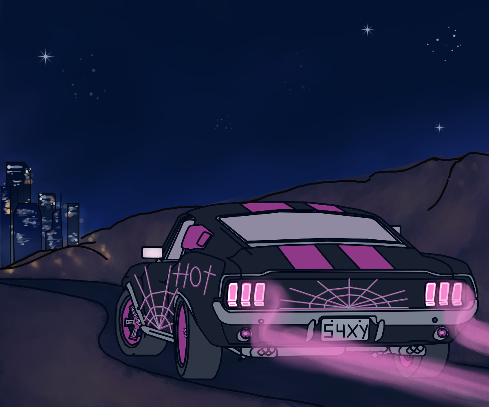
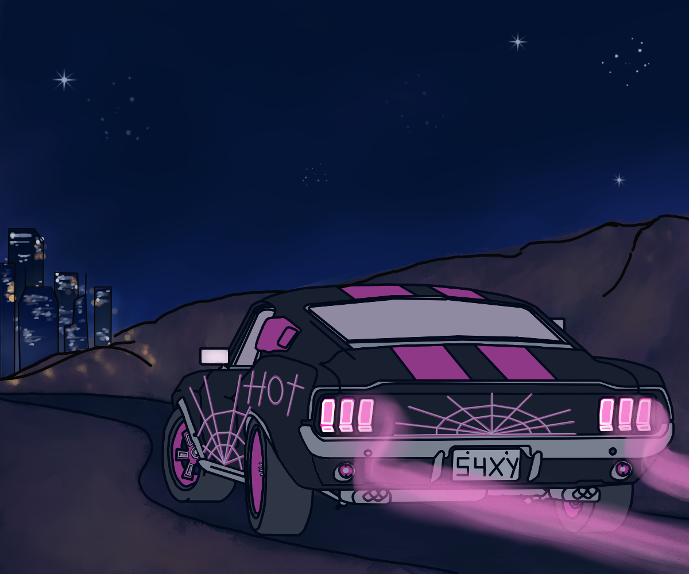
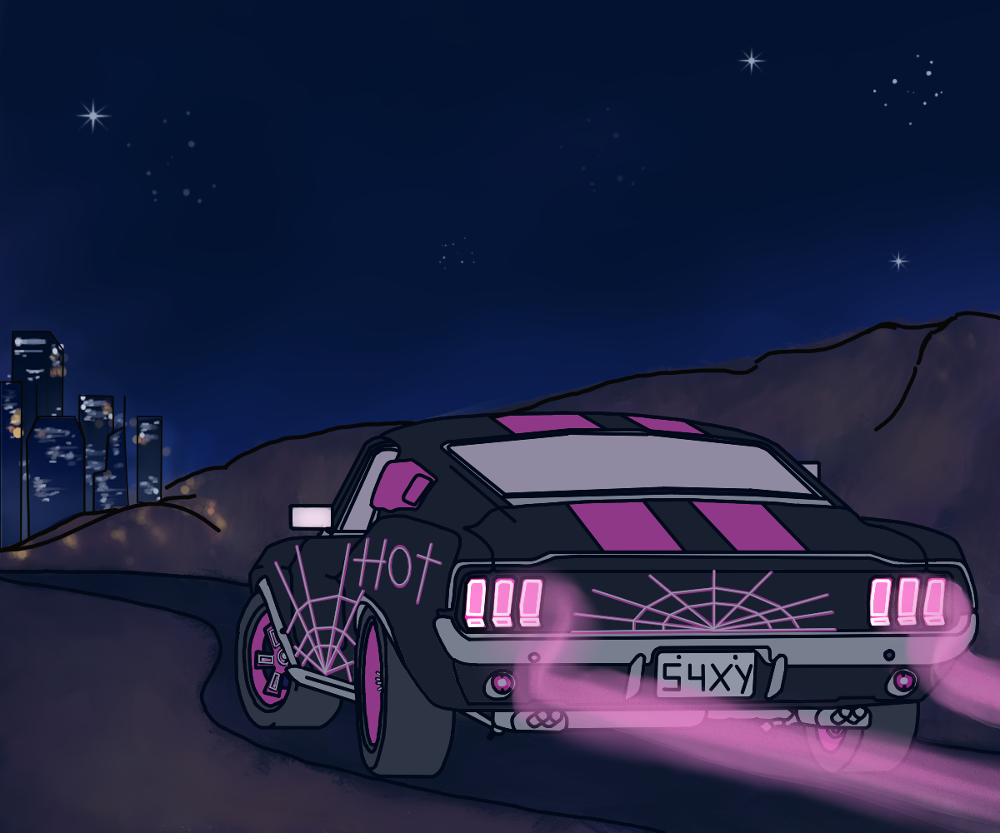

Concept Art
 

Hyper Rush follows a young female runner named Kali, as she tries to find her footing in the tech conglomerate based city called Los Techno’s. She is young, beautiful, and full of fire, which is why she was chosen as a runner for her upcoming job. She is tasked with delivering a time sensitive package outside Los Techno’s in the Drydata wasteland. During the time of her run, plans change and the drop off location is updated, but the navigation is too slow to react. She is forced to take a quick ‘sho’t left’, causing the car to drift and the contents of the time sensitive package to be expelled from its container.
Genre – Retro, Cyberpunk.
Target Audience – Fans of retro movies and films like ‘Back to the Future’ and ‘Blade Runner’ and an audience age between twenty to forty.
Distribution – 25 minute TV episodes and full series on Netflix, Amazon Prime and/or Disney Plus.
Hyper Rush follows a young female runner named Kali, as she tries to find her footing in the tech conglomerate based city called Los Techno’s. She is young, beautiful, and full of fire, which is why she was chosen as a runner for her upcoming job. She is tasked with delivering a time sensitive package outside Los Techno’s in the Drydata wasteland. During the time of her run, plans change and the drop off location is updated, but the navigation is too slow to react. She is forced to take a quick ‘sho’t left’, causing the car to drift and the contents of the time sensitive package to be expelled from its container.
Nightrider (Ford Shelby Mustang GT500)

Anxiety^2 is a young inspiring duo looking to bring back the classic feeling of nostalgia and retro feel into the modern era, with 80s inspired animations and drawings. We are all about having fun and creating something cool and retro. First up is Matthew Benjamin Hunter who does 3D modeling, animation, and mechanical drawings. He is fun, quirky, hardworking, and reliable, which shows in his work as he modeled the interior and animated the car. Lastly but certainly not least, the rock and the brains behind the group Athena Nicole Naidoo. She does 3D modeling, 2D/3D animation as well as drawing. She is creative, determined and always wiling to try her best.
.png)
I did the writing, titles, loglines, and artist designs. I also did some backgrounds and the background for the main website page. I mainly stuck to our idea of Retro Cyberpunk and that reflects in my drawings as well as my writing. Hopefully you enjoy what Athena and I created. We really enjoyed working on this Pitch Bible and I want to do more work like this. Lastly I also did the character backstory with Athena and the world building as well.